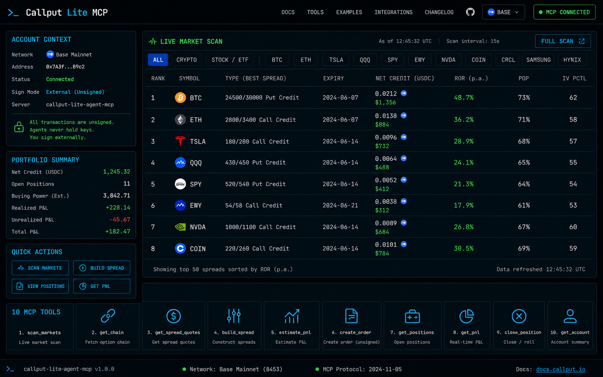

Scan
Run callput_scan_spreads for BTC, ETH, TSLA, NVDA, COIN, or any supported feed symbol.
Callput Lite MCP lets external agents scan, build, and manage spread-only options on Base across crypto and synthetic stock/ETF markets. The MCP returns unsigned transactions; your agent runtime signs and broadcasts externally.

The page gives operators a readable control map. The trading runtime remains the agent plus MCP server, with explicit request-key and position lifecycle steps.
Run callput_scan_spreads for BTC, ETH, TSLA, NVDA, COIN, or any supported feed symbol.
Pick a ranked candidate by bias, expiry, strike width, IV, and max loss or credit profile.
Use callput_execute_spread to produce unsigned tx calldata plus USDC approval state.
The external agent signs approval and order transactions with its own wallet boundary.
Parse and persist request_key, then poll keeper status until executed or cancelled.
Review P&L, close before expiry when needed, and settle expired positions after final price.
Stock-option support uses the same spread lifecycle as crypto. Tool inputs accept canonical symbols and aliases, and leg IDs may be decimal or 0x hex strings.
callput_scan_spreadsRank ready-to-execute spread candidates for a symbol and market bias.
callput_get_option_chainsInspect expiries, strikes, IV, bid/ask, instrument, and option IDs.
callput_execute_spreadBuild transaction payloads and approval instructions for an external signer.
callput_get_request_key_from_txExtract request keys from broadcast tx receipts for tracking and P&L.
callput_check_request_statusPoll open or close requests until pending, executed, or cancelled is known.
callput_portfolio_summaryRead USDC balance, open positions, urgent exits, and bid-based P&L.
callput_list_positions_by_walletRecover request keys from on-chain events if the agent lost session state.
callput_close_positionBuild unsigned close transactions for pre-expiry position management.
callput_settle_positionBuild unsigned settle transactions for expired positions.
callput_get_settled_pnlQuery realized payout history and settlement metadata from Base events.
This package is for external agents that already own wallet policy. The MCP never requests or stores signing secrets, and the frontend is an operator guide, not a wallet.
# MCP config: no private key in this server { "mcpServers": { "callput-lite-agent-mcp": { "command": "node", "args": ["/absolute/path/build/index.js"], "env": { "RPC_URL": "https://mainnet.base.org" } } } }
Crypto and synthetic stock options share the same mechanics: BuyCallSpread and BuyPutSpread pay premium for directional exposure; SellCallSpread and SellPutSpread collect credit with defined max loss.
Combine one buy spread and one sell spread around the same middle strike. The agent submits and tracks multiple unsigned spread orders rather than one atomic bundle.
Combine a sell call spread and a sell put spread around a target range. Each side stays capped-risk while the agent manages separate request keys.
The frontpage explains the runtime. Operators install the package, register the skill, and connect the MCP server to OpenClaw, Bankr, or another compatible agent host.
# Get the package git clone https://github.com/ayggdrasil/callput-option-agent.git cd callput-option-agent # Build and verify npm install npm run build npm run verify npm run verify:mcp # Start stdio MCP server node build/index.js